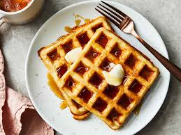

Home
Classic Waffles

Classic Waffles are crispy on the outside, soft on the inside, and perfect for breakfast. They are best served warm with syrup, fruits, or butter.
Ingredients
- 2 cups all-purpose flour
- 2 tablespoons sugar
- 1 tablespoon baking powder
- 1/2 teaspoon salt
- 2 large eggs
- 1 3/4 cups milk
- 1/2 cup vegetable oil
- 1 teaspoon vanilla extract
Steps
- Gather all the ingredients.
- Mix the dry ingredients in a bowl.
- In another bowl, whisk the wet ingredients.
- Combine the wet and dry ingredients, stirring until just mixed.
- Heat the waffle iron and spray with cooking spray.
- Pour the batter onto the waffle iron and cook according to the manufacturer's instructions.